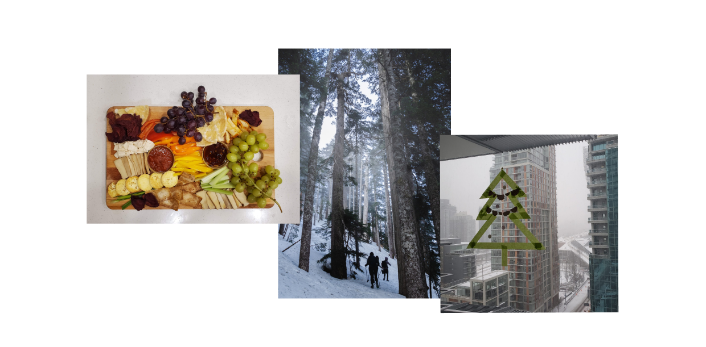
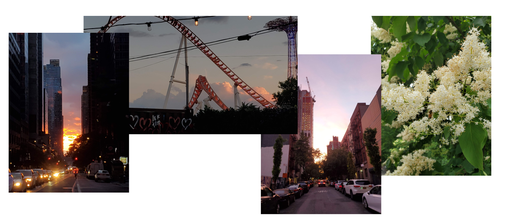
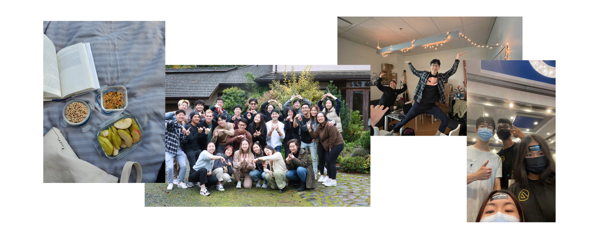
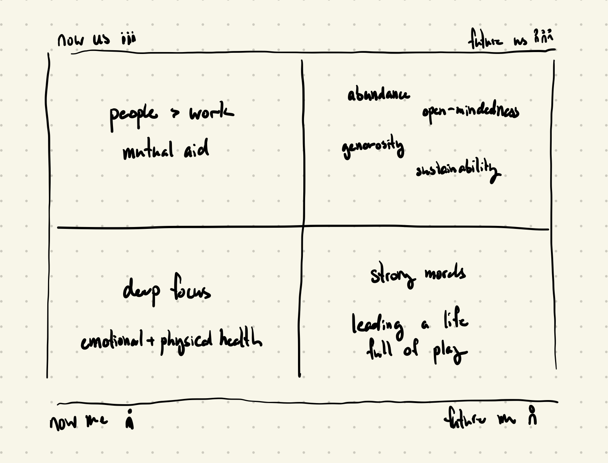

Have you been writing those letters to yourself? “Dear Evan Hansen, This is gonna be a good day and here’s why.”
This post comes to you in 3 parts: a letter to my past self, a reflection on goals, and a letter to my future self.
One reminiscent and nostalgic, one a neutral review, and the last a brutally honest dump of aspirations and feelings.
To my 2021 self,
Little do you know you’ll start off the year making a charcuterie board of tofu, snowshoe trips with friends, and making a masking tape Christmas tree that still stands to this day.

Maybe not the most usual start to a year but fitting considering the year that is ahead of you.
You tried lots of new things! Some you liked and some you didn’t. It was full of meeting lots of really wonderful new people, writing lots, reading lots, getting incredibly digital-garden-pilled, and (admittedly) being on Twitter a bit too much.
You learned how to drive, maybe a few years later than usual, but hey you got it done. Not many people may trust your driving skills from New York but that’s reasonable given the only thing between you and a license was a 7-minute long stroll down the road. In learning to drive, you spent some extended time with the family for the first time in a while and all of the pains and joys that brings.
And maybe the most surprising of them all, you decided to say ‘fuck it’ and decided to move to a co-living house with 15 other people in New York for the summer. Let’s just say you learned the importance of personal time pretty quickly. Yet, amidst the hustle-and-bustle of the millions in New York, you were able to find solace in the books, the parks, and the few close friends made. There is a really nice bench near the Guggenheim under a blooming Crabapple tree that sags just the right amount to be extra comfortable. I suggest bringing some nice bread and a book to spend a few afternoons here and really just bask in its serenity.

Luckily, COVID calmed down enough in the second half of 2021 to be able to see old classmates again in-person for the first time. Being able to laugh at dumb jokes in the same room or just working in amiable silence may feel quite distant but I assure you it will happen and it will be just as good as you remembered it being.
You had cozy picnic dates, 20-person AirBnB rentals on Victoria Island, and a crazy hackathon all the way down in Austin, Texas. You and Anson finally celebrated your first anniversary together and, lo and behold, got each other the exact same thing. Disgustingly cheesy, you two.

To summarize, this was a year of understanding yourself and opening up to the world. You learned that, maybe, it wasn’t so bad to be vulnerable and to express yourself in full to the people around you. You learned the joys of meeting wonderfully passionate people who talk about their craft with stars in their eyes and the deep gratitude of getting to more fully know the people you choose to surround yourself with.
The biggest part of this year were the friends and loved ones that stuck with me through the best and worst of it.
“Who are the people, ideas, and books that magnify your spirit? Find them, hold on to them, and visit them often.” — Maria Popova
I hope you cherish these people and make sure they know just how much they are appreciated, and excited for you to live this year like I did.
Kindly, Your present self
I set a few goals at the end of my last end-of-year reflection.
- Donate 5% of pre-tax income to charity
- I made a total pre-tax income of around ~30k and total donation amount tallying up to 2.2k to Project for Awesome, Asian Mental Health, Nonprofit Foundation, Heart and Stroke Foundation, and bootstrapping for the reflect apprenticeship.
- There were a few times this year I felt stretched thin financially due to lack of financial planning. I don’t regret giving though. I love giving in a way that feels local and impactful. I would be interested in expanding this to start a mini grants program using Moth Minds or something, but this would involve first improving my own financial management and budgeting :))
- Reach 50k people through projects and blog posts
- Done! Surprisingly prolific year in terms of projects and writing. Got really into digital gardening and CLIs for a bit over the summer and even ended up doing a few workshops too. Happy with the amount of technical growth that happened this year.
- As a side note, it’s been so so cool watching a little community grow around Quartz and all the different types of people from all around the world giving it a chance to be a part of their daily workflow. (And all the growing pains that come along with open-source maintenance and community management)
- Read 10 books
- Actually pretty proud of this one! Not just because I crushed the number (18 whole books!! A whole 3x more than last year) but I felt like I had a really good diet of the different types of content I was consuming. Did a lot of online link collecting and book reading of both fiction and non-fiction. I found out that I surprisingly liked both dense academic text as well as soft scifi. I love the nuance and depth of takes that longer texts afford as well as the elaborate and at times poetic world building that happens in heavier fiction reads. I always remember reading under the covers with a flashlight because I wanted to finish the last book in a trilogy but lost that itch quite a while ago. Missing your bus stop because a chapter was just so good is not quite the same but close.
- Set aside 10 hours a week for personal projects, learning, and writing
- One particularly hard week in March ruined this streak unfortunately :((
- Otherwise, I would consider this a success! This year, I had the wonderful chance of meeting some people who don’t make me feel ashamed of but genuinely excited about niche interaction design reads, weirdly technical blogs, and digital gardening.
- I feel like I finally have a group of people to just ‘nerd snipe’ each other and be ok with just sharing cool things I am working on. Eternally grateful to curius.app, the whole gang at @verses, and the whole ‘snipe city’ group chat.
- Be able to run from my apartment to Stanley Park and back (~10km) in one go
- Sadly, the one actual physical goal I had I did not meet. In reality, I didn’t take as good care of my body as I would’ve liked, often skimping on meals to get just a little bit more done.
- I often blamed my weird class schedule for my lack of consistent physical activity this term but I know that that is no real excuse. I’m going to do better on this next year.
- Have 1:1s with 50 new people in 2021
- This is a goal that actually really surprised me as to how easy it became. When setting it, I surely thought that if there was one goal in this list I wouldn’t meet, it would be this one.
- At the start of last year, meeting people was not something I generally looked forward to. Yet, I found myself actually really enjoying each conversation after a while. Each call and meeting was a chance to quickly glimpse into the life of another, an offering of their incredibly valuable time in order to just talk.
- To all 56 who offered just a little bit of your time to talk, I thank you. Many of my thoughts build off of our conversations and I am forever grateful for your thought-gifts.
To my future self,
I am writing to you with the highs of new years optimism wearing off. ‘Tis the time of new years resolutions!
Maybe it’s the residual headache from the booster shot speaking or maybe its just me being a little tired but I hope you are doing well. More than anything I hope you are taking good care of yourself.
I’ve never really written a letter to my self before, let alone one to my future self. I’m not quite sure what the tone of this piece is and quite certain that you will look back on this and laugh a little and just how bad it is.
To be honest, I know I’ve been saying that I’m working on being candidly excited about everything but I’m a little scared about the future.
I care a lot about the people around me right now. These are an absolutely wonderful group of people who care about the world, endlessly curious, and inspire me to be better people. Yet it seems that everyone is headed in slightly different directions. I don’t want to lose these people to a few measly miles and timezones. I really hope that, despite life choosing to move us in different paths physically, we’ll be able to consciously choose to band together and stay close.
I know it would be unreasonable to set super concrete goals given the whole waves hand. So I leave you not with a list of goals that I hope you will have accomplished, but a list of qualities I hope you’ll have grown into.
My long term Bento
I recently found out about the philosophy of Bentoism, a way of planning with a wider view of interests than just what we want right now, like our future selves, the people we care about, and the future of our children.
I really like this way of thinking about self-interest as not just our current selves but as a community that spans across time. I’ve been thinking a lot about about what long-term success for me would look like. I don’t think I’ve settled on anything concrete but there are certain aesthetics I would like it to embody:
- I would like to be emotionally and physically well. I would like to be able to reach deep focus in whatever work I do and have the resources to be able to choose the work I find enjoyable.
- I would like to be a great friend, family member, partner, and community member. I want to have the bandwidth to be generous to the people around me and the clarity to prioritize the important people in my life.
- I want to be authentic and unabashedly excited about the world. I want to be able to help others create spaces of local abundance.
- I hope you are ambitious in your dreams, projects, and writing. I want to embody a sort of quiet confidence in my own abilities and interests.
- I hope you are steadfast in the values you believe in, cherish the people around you, and grow into the person you’ve been wanting to become.
To concretize, I hope you end each day saying you’ve embodied these:
- If it’s not a FUCK YES, it’s a no. We are not half-assing anything in 2022
- Eat well, sleep consistently, and exercise often
- Be intentional about the people you care about
I hope you are honest with yourself. Be kind.
Kindly, Your present self